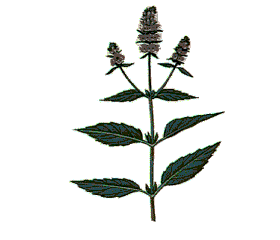
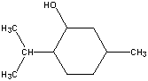
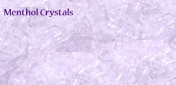

Menthol is the chief constituent of peppermint oil and is responsible for its odor and taste and the "cooling sensation" when applied to the skin and mucosal surfaces. Mentha piperita contains up to 50% menthol and Mentha arvensis contains 70-80% menthol (Siegel-Maier, 1998) .
Peppermint oil is one of the essential oils. These volatile oils are obtained by distilling the flowers, leaves, and roots of many plants with water, the oil separates from the distillate and usually has an odor highly characteristic of the plant of origin. The resulting oil mixture of organic compounds was thought to be the essence (the most important ingredients) of the plant hence the word essential oils (Streitwieser et al., 1992).
Terpenes are a class of organic compounds that are most abundant component of essential oils of many plants and animals. Essential oils in particular oil of turpentine were known to the ancient Egyptians. It was not until the 19th century that an effort was made to determine the chemical constituents of essential oil. In 1818, the carbon to hydrogen ratio in oil of turpentine was found to be 5:8. This same ratio was subsequently found for a wide variety of natural products. The collection of related material became known as terpenes - older spelling for turpentine. The similarity in the atomic composition of the many terpenes led to the idea that they might possess some unifying structural element (Loudon, 1983).
In 1887, Otto Wallach, a German chemist, pointed out the common structural feature of the terpenes. They all consist of repeating units that have the same carbon skeleton, as the 5-carbon isoprene structure. All terpenes could be generally dissected into more than one isoprene unit (Allinger et al., 1976).
Because of the relationship to isoprene - terpenes are also called isoprenoids. Isoprenoids are further classified by the number of carbons in their carbon chains. Those with 10 carbon atoms are considered monoterpenes - menthol (2-isopropyl-5-methyl-cyclohexanol) is a cyclic monoterpene (Loudon, 1983).

Menthol has three asymmetric carbon atoms in its cyclohexane ring and therefore occurs as four pairs of optical isomers. The l-menthol is the isomer that occurs most widely in nature and is the one assumed by the name menthol. This isomer has the characteristic peppermint odor and exerts a cooling sensation when applied to skin and mucosal surfaces. The other isomers have a similar but not identical odor and do not have the same cooling action as l-menthol (Eccles, 1994).
The most important determination to be made in examining the isolated peppermint oil is that of the total amount of menthol isolated. values for per cent menthol for Mentha piperita versus Mentha arvensis. The cost of menthol extracted from a plant's own oils is much higher than menthol synthnesized from petroleum products. 75% of the world's supply of peppermint comes from the United States with Oregon being the leading mint producer.. As of 1996, 31,000 acres of peppermint were growing in the United States; 3,007,000 pounds were harvested at a total value of $35,783,000 (Washington Annual Bulletin, 1997).
Analytical Characteristics of L-Menthol
On the cooling of peppermint oil to low temperatures the separation of menthol occurs especially if a few crystals of menthol are added to start crystallization. The United States Pharmacopeia describes menthol as forming colorless, prismatic crystals that have a strong and pure odor of peppermint and a warm aromatic taste followed by the sensation of cold when air is drawn into the mouth.

| Appearance | colorless free flowing needlelike crystals |
| Odor and Taste | Minty-Natural-cooling |
| Molecular Weight | 156.27 |
| Molecular Formula | C10H19OH - a terpene alcohol |
| Solubility | Soluble in alcohol, chloroform, ether, only slightly soluble in water but imparts its odor and taste |
| Melting Point | 43 degrees C (109.4 drees F) to a colorless liquid |
| Boiling Point | 212 degrees C (413.6 degrees F) |
| Optical Rotation | -45 to -51 (in degrees C) |
| Composition | Laevo-menthol, 99.7% minimum |
| Non Volatile Matter | less than 0.05% left, volatilizes slowly at room temperature |
| Storage | Menthol will retain its original physical characteristics if stored in tight containers in a cool area away from direct heat or sunlight. |
The volatility of menthol is the reason why it was so difficult to control the
concentration of menthol in cigarettes. Liggett and Meyers had a brand of cigarettes called
"10 by 10"
- the pack had half menthol and half non-menthol in the same package. The arrangement
didn't work out - the menthol moved or equilibrated making all the cigarettes taste the same
(Philip Morris document number 2055557893).
| CATEGORY | PRODUCTS |
|---|---|
| Oral Products | Toothpaste, Mouthwashes, Oral Sprays |
| Pharmaceutical Products | Drugs, Cough drops, Cough Lozenges, Analgesic Balms, Inhalers |
| Confectionary Items & Beverages | Chewing Gums, Hard Candies, Chocolates, Aerated Drinks & Liquors |
| Tobacco Goods | Regular Cigarettes, Menthol Cigarettes, Pipe Tobacco, Chewing Tobacco |
| Perfumed Products | Lotions,After-shave lotions, Handkerchiefs, Foot Sprays, Shampoo, Refreahing Towels and Cooling Gels |
| Peppermint Oils | Menthol and its derivatives can also be added to various peppermint type compositions to enhance the cooling and freshening effect, like Perfumes, Eau De Toilettes, Deodorants, Scents |
Non-prescription drugs and dieting supplements containing menthol
(PDR 21st Edition, copyright 2000):
Afrin Saline Aromatic Mist (Schering-Plough)
ArthriCare Arthritis Pain Relieving Rub (Del)
ArthriCare Triple-Medicated Arthritis Pain
Relieving Rub (Del)
BenGay External Analgesic Products (Pfizer Consumer)
Celestial Seasonings Soothers Herbal Throat Drops
(Warner-Lambert)
Cepacol Maximum Strength Sugar Free Sore Throat
Lozenges, Cherry Flavor (Williams)
Cepacol Maximum Strength Suagr Free Sore Throat
Lozenges, Cool Mint Flavor (Williams)
Cepacol Regular Strength Sore Throat Lozenges, Cherry
Flavor (Williams)
Cepacol Regular Strength Sore Throat Lozenges, Original
Mint Flavor (Williams)
Dermoplast Hospital Strength Spray (Medtech)
Halls Mentho-Lyptus Cough Suppressant Drops
(Warner Lambert)
Halls Plus Cough Suppressant/Throat Drops with
Medicine Center (Warner-Lambert)
Halls Sugar Free Mentho-Lyptus Cough Suppressant Drops
(Warner-Lambert)
Halls Sugar Free Squares (Warner-Lambert)
Listerine Antiseptic Mouthrinse (Warner- Lambert Consumer)
Cool Mint Listerine Antiseptic Mouthrinse (Warner-Lambert>
Consumer)
FreshBurst Listerine Antiseptic Mouthrinse (Warner-Lambert
Consumer)
Tartar Control Listerine Antiseptic Mouthrinse (Warner-Lambert
Consumer)
Robitussin Cough Drops (Whitehall-Robins)
Thera-Gesic Pain Reliever/External Analgesic Creme (Mission)
Vicks Chloraseptic Sore Throat Lozenges, Menthol and Cherry
Flavors (Procter & Gamble)
Vicks Cough Drops, Menthol and Cherry Flavors (Proctor &
Gamble)
Vicks VapoRub Cream (Proctor & Gamble)
Vicks VapoRub Ointment (Proctor & Gamble)
Allinger N MP Cava and DC DeJough, Oranic Chemistry, Worth Publsihing, 1976.
Brown D, Encyclopedia of herbs and their uses, Dorling Kindersley, NY NY, 1995.
Corliss J, Research mind the mint, Agricultural Research 40: 15-17, 1992.
Duff SR and B Furgala, Some effects of menthol on honeybee tracheal mite infestations in non-migratory honey-bee colonies in Minnesota, Am. Bee J. 131: 315-317, 1991.
Eccles R, Menthol and Related Compounds, J. Pharm. Pharmacol. 46: 618-630, 1994.
Hay R and PG Waterman, Volatile oil crops: their biology, biochemistry and production, Longman Scientific and Technical, NY NY 1993.
Landing JE, American Essence: A history of peppermint and spearmint industry in the US, A.M. Todd Foundation, Kalamazoo, MI 1969.
Lewis K, Peppermint and Spearmint, The Oxford Review, 1998.
Loudon GM, Organic Chemistry, Addison-Wesley Publishing Co., Reading, MA, 1983.
Siegel-Maier K, Peppermint: more than just another pretty flower, Better Nutrition 60: 24, 1998.
Streitwieser A CH Heathcock and EM Kosower, Introduction to organic chemistry, MacMillan Publishing Co., NY NY, 4th edition, 1992.
Washington Annual Report, 1997 (http://www.nass.usda.gov/wa/annual97/conten97.htm).